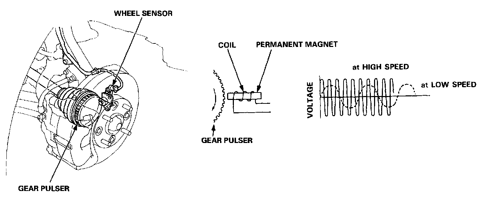

Wheel Speed Sensor: Description and Operation

Features/Construction
Wheel sensor
The wheel sensor is a contactless type that detects the rotating speed of a wheel. It Consists of a permanent magnet and coil. When the gear pulsers attached to the rotating parts of each wheel turn, the magnetic flux around the coil in the wheel sensor alternates, generating voltages with frequency in proportion to wheel rotating speed. These pulses are sent to the ABS control unit, and the ABS control unit identifies the wheel speed.